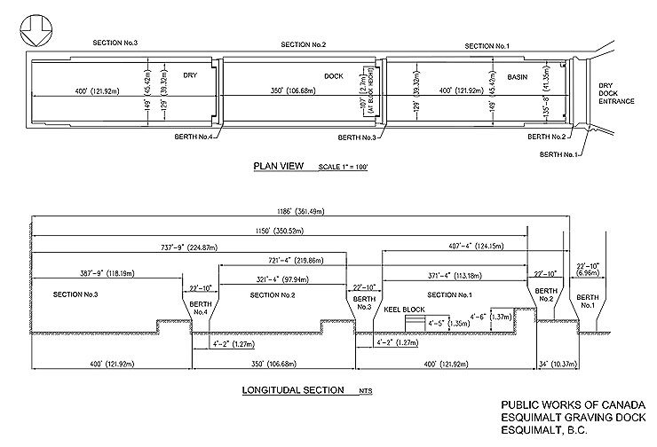

About the Dock
The Esquimalt Graving Dock's dimensions measure 357.5 metres by 38.4 metres – or about 1,200 feet long by 135 feet wide. The north landing jetty is 305 metres long (1000 feet) and contains 10 metres of water (30 feet) at low tide. There is another 305 metres (1000 feet) of berth frontage at the south landing wharf.
The Dock can be divided in two with a caisson and closed by floating caissons ballasted with concrete and sea water. A tunnel on the north side is used to fill and empty the Dock and this tunnel connects to separate tunnels enabling each section of the dryock to fill independently through culverts in the floor.
The property perimeter is fenced and there are reinforced concrete retaining walls bordering the east end. The Dock is lit by eight high-mast towers with high pressure sodium lighting fixtures plus standard mercury vapour lighting.

Recently, stabilizer pockets were built into the concrete walls of the drydock. This new feature enables cruise ships to extend their stabilizers for inspection, maintenance and repair while in drydock.
Dock Dimensions
A larger image of “Dock Dimensions” is available on a separate page.
Schematic of the Esquimalt Graving Dock showing the plan and longitudinal views of the drydock. The Esquimalt Graving Dock's dimensions measure 357.5 metres by 38.4 metres – or about 1,200 feet long by 135 feet wide. The Dock can be divided into two seperate sections.
Aerial View of the Dock

Basic aerial map of the Esquimalt Graving Dock facility showing the dimensions of the drydock; south jetty; north landing wharf and the depth of surrounding waters.
Cross Section of the Dock

A cross-section schematic of the drydock showing the total height and width of the drydock. The height of the floor to the coping is 14.93 metres; while the width of the dry dock at enterance is 41.15 metres.
Technical Information
| AREA | METRES |
|---|---|
| Total length of dock | 361.48 |
| Clear inside length, cassion in place in stop 1 | 357.5 |
| Clear inside length, cassion in place in stop 2 | 347.67 |
| Clear inside length, cassion in place in stop 3 | 225.65 |
| Clear inside length, cassion in place in stop 4 | 119.07 |
| Clear inside length, cassion in place in stops 2 and 3 | 114.96 |
| Clear inside length, cassion in place in stops 2 and 4 | 221.64 |
| Width of dock at entrance | 41.15 |
| Depth of water over dock sill (High Water Ordinary Spring Tide) | 12.19 |
| Depth of water over dock sill (Low Water Ordinary Spring Tide) | 9.14 |
| Depth of water over keel blocks (High Water Ordinary Spring Tide) | 12.22 |
| Depth of water over keel blocks (Low Water Ordinary Spring Tide) | 9.17 |
| Height of keel blocks above deck floor | 1.55 |
| Height of floor to coping | 14.93 |
Source: Harbour & Shipping Journal, July 2002, Volume 85, No. 7